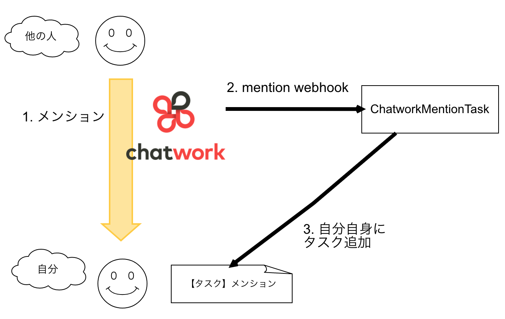
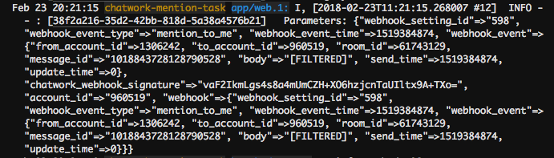
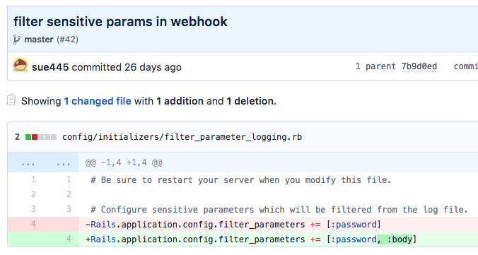
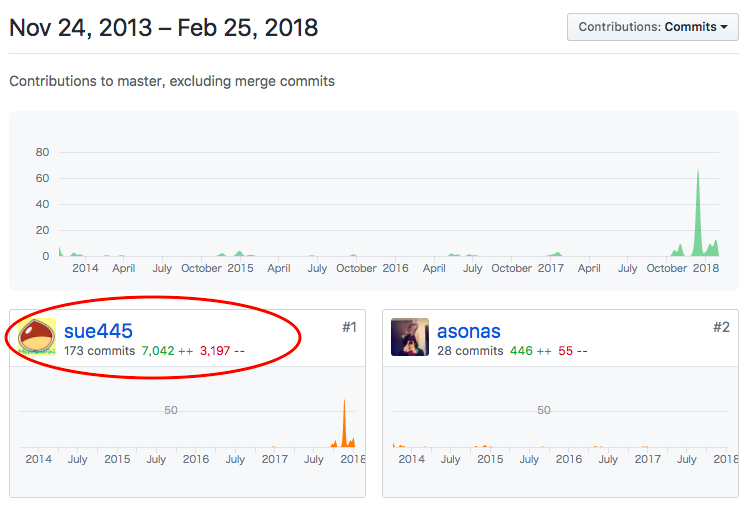

自己紹介 
- @sue445
- 最近はTerraformと戦う日々
- 去年は尿管結石が3〜4回できたり、持病が悪化して入院したり、親が死んで喪主やったりと色々と大変だったので今年は平穏に生きたい
sue445
2018/03/25 Rails Developers Meetup 2018: Day 2
@ 的なやつが欲しくて作った


ChatWorkのAPIのリフレッシュトークンの有効期限は2週間なので、リフレッシュトークンが切れる3日前にリマインド用にタスクを作るようにした

webhookの params[:body] にチャット本文が入っていて、それがログに出るのが嫌だったのでパスワード同様フィルタリングするようにした。


https://github.com/sue445/chatwork_mention_task/commit/ec3e2583044e2c132ef1de9ef0c656f1e74dcac1
Deploy to Herokuボタンに対応してるので、HerokuのアカウントとChatWorkのOAuth Clientさえあればワンクリックでデプロイできる

https://github.com/sue445/omniauth-chatwork
Railsだとこんな風に書いておくだけでいい感じにChatWorkのOAuth認証が使えるようになる
# config/initializers/omniauth.rb
Rails.application.config.middleware.use OmniAuth::Builder do
provider :chatwork, ENV["CHATWORK_CLIENT_ID"], ENV["CHATWORK_CLIENT_SECRET"], scope: ["users.profile.me:read", "rooms.tasks:write", "rooms.info:read"]
end
https://github.com/asonas/chatwork-ruby

stub_chatwork_request と it_behaves_like :a_chatwork_api でramlを利用describe ".create", type: :api do
subject { ChatWork::Message.create(room_id: room_id, body: body, &block) }
let(:room_id) { 123 }
let(:body) { "Hello ChatWork!" }
before do
stub_chatwork_request(:post, "/rooms/#{room_id}/messages", "/rooms/{room_id}/messages")
end
it_behaves_like :a_chatwork_api, :post, "/rooms/{room_id}/messages"
end
https://github.com/asonas/chatwork-ruby/blob/v0.8.0/spec/lib/chatwork/message_spec.rb#L24-L35
before_action から呼んでやるだけでOK # app/controllers/webhook_controller.rb
class WebhookController < ApplicationController
before_action :verify_chatwork_webhook_signature!
end
リクエストごとにtokenを変えて検証する必要がある場合はこんな感じ
class WebhookController < ApplicationController
before_action :set_user
before_action :verify_signature!
private
def verify_signature!
return unless Global.app.verify_signature?
verify_chatwork_webhook_signature!(@user.webhook_token)
end
end
sue445/heroku-cli が最軽量常に最新のheroku/cliをDockerイメージで使いたかったので、heroku/cliの更新を自動検知してDockerイメージを自動ビルドする仕組を作った

Deploy to Herokuボタンに対応してるので、HerokuのアカウントとSlackのwebhookさえあればワンクリックでデプロイできる